2. Modèle du Domaine
2.1 Diagramme de classe conceptuel
Le diagramme conceptuel modélise les entités principales du domaine.

2.2 Diagrammes de Séquence Système
Les diagrammes système représentent les interactions entre l’acteur et le système sans détail interne.
Volet Administratif
2.2.1 Création, modification et suppression de lieux de transport (Aéroports, Ports, gares)
Pour la creation/modification/suppression d'un aéroport/port gares, apres le premier diagramme de sequence popur le vol nous nous sommes rendus compte que le processus de creation des ces trois(03) entités , reposaient sur le meme principe . Par conséquent dans les deux autres sections (navales et ferovieres) ces parties resteront vides pour eviter les repetirions
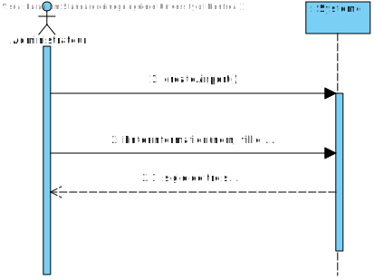 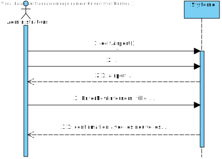 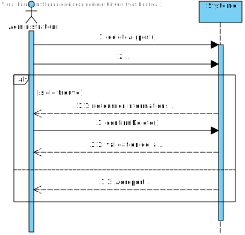
2.2.2 Création, modification et suppression de compagnies (Aériennes, Navales, ferroviaire)
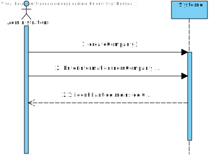 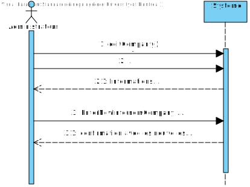 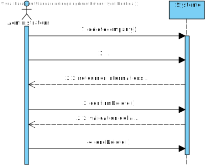Pour ce dernier aussi les 3 sont similaires d'ou le fait de
2.2.3 Création, modification et suppression de vols
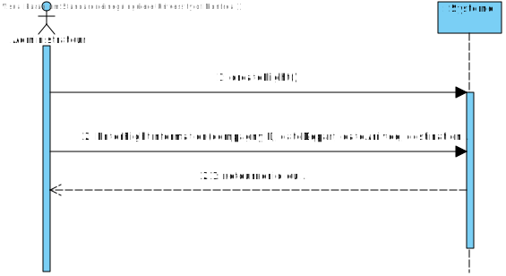 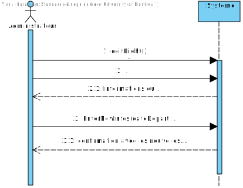 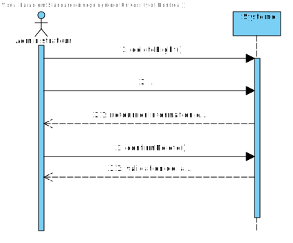2.2.4 Création de sections d'un avion
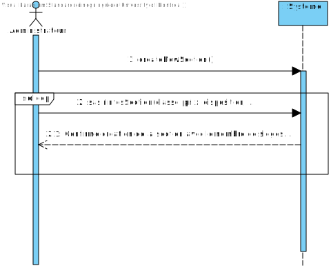2.2.5 Assignation de prix
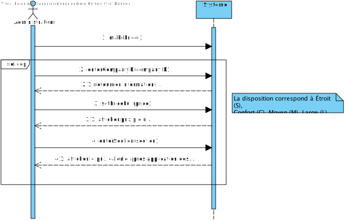2.2.6 Consultation d'un vol
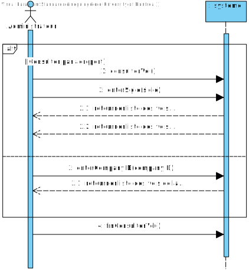2.2.7 Création, modification et suppression d'itinéraire
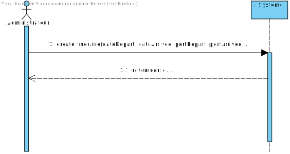 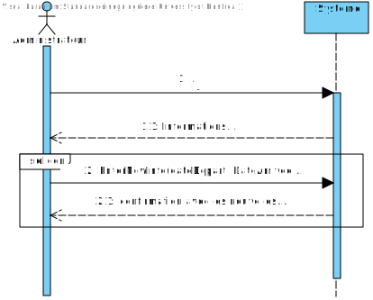 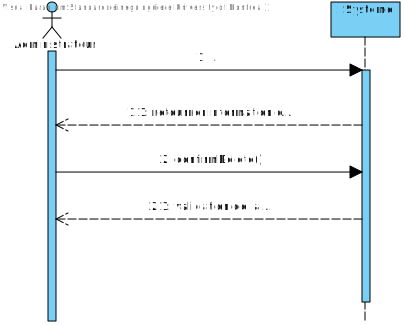2.2.8 Création de sections d'un paquebot
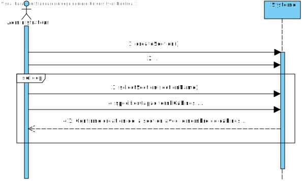2.2.9 Consultation d'un itinéraire
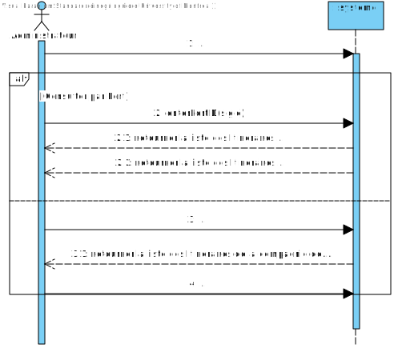2.2.10 Assignation de prix d'un itinéraire
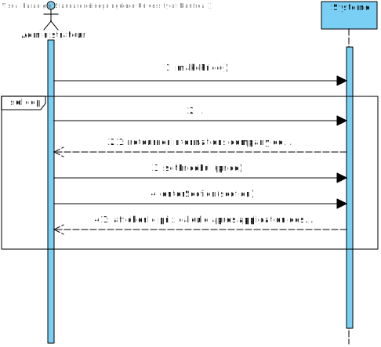Création, modification et suppression de trajets
 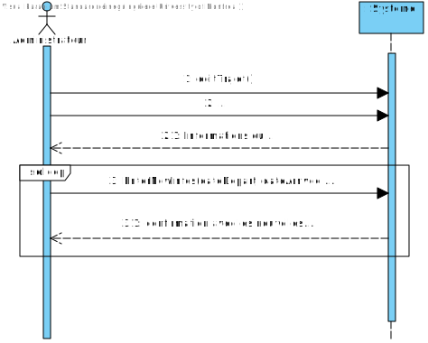
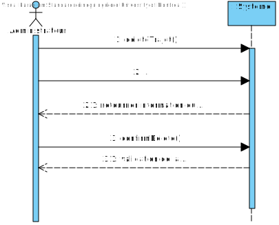
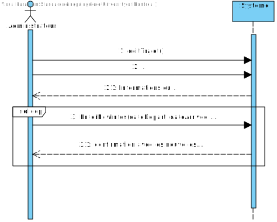
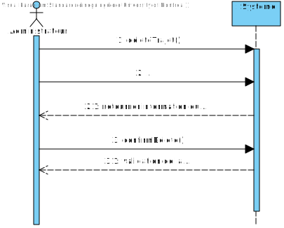